The Weather Won't Decide Itself — a UX case study
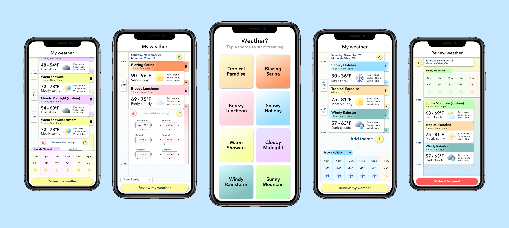The Weather Won't Decide Itself was my UX case study approach to designing a mobile app that walks users through the process creating their OWN weather. Read the unabridged version on Medium!
Design process
Weather creation being a new and unusual experience, I started out with the research goal of discovering what kind of weather users wanted in the first place, and their general attitudes toward the idea of creating it themselves.
I talked with 5 potential users between the ages of 25 and 56, and asked them, first, "What is your preferred or ideal weather?" and second, "If you had one day to make the weather anything you want, what would it be?"
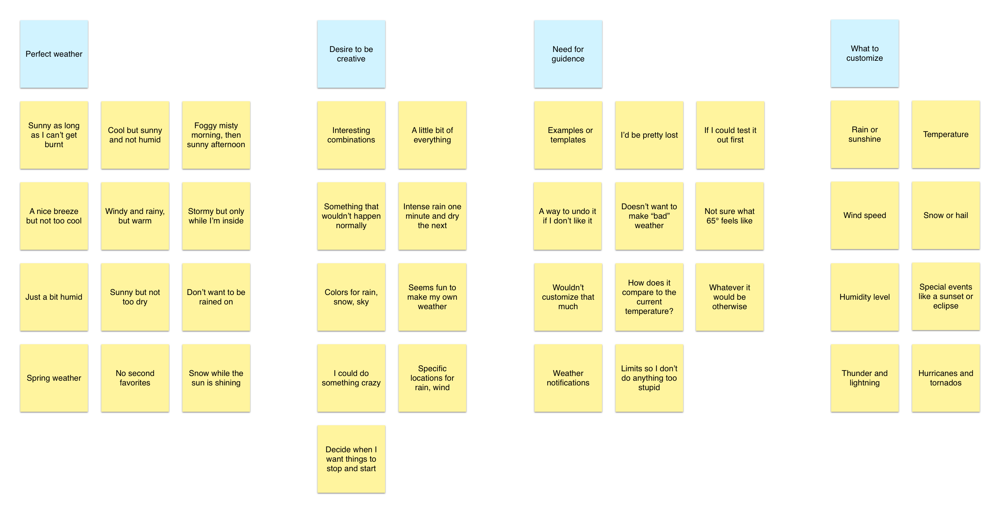Based on my research, I created two personas to capture the goals and attitudes of different users who might suddenly encounter a DIY weather app on their smartphone.
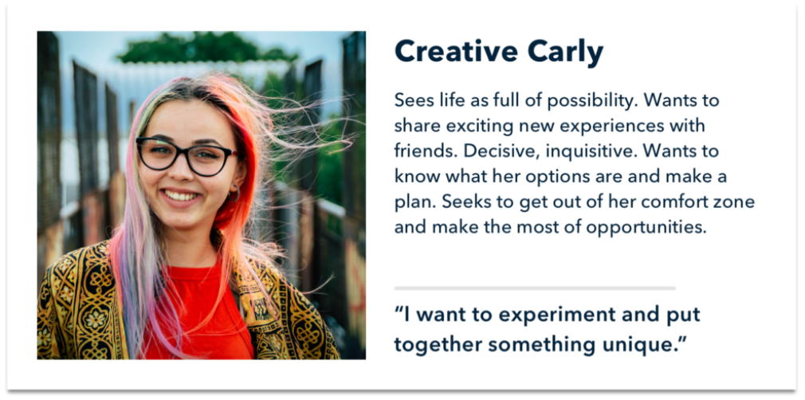 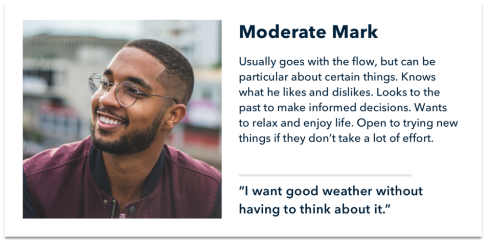 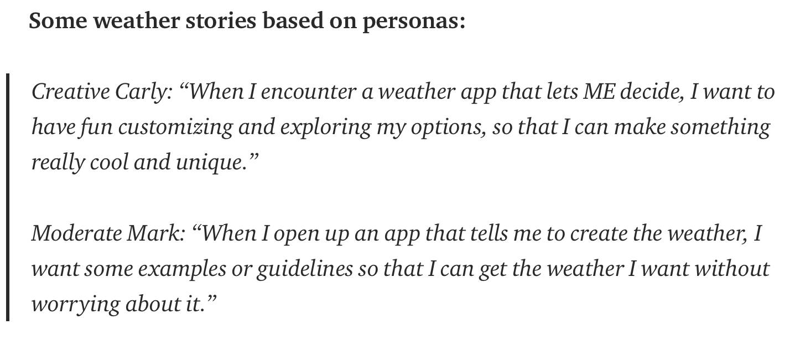To get a sense of the competition, I investigated a few existing weather apps. Most of these apps, while thorough, provided more info than my users would probably ever care to fill in on their own.
Going forward, I defined two product principles to help guide my design execution: First, make the quickest path to perfect weather apparent and second, use familiar concepts and patterns to successfully guide users through an unfamiliar experience. From there, I started using paper screens to quickly prototype initial ideas.
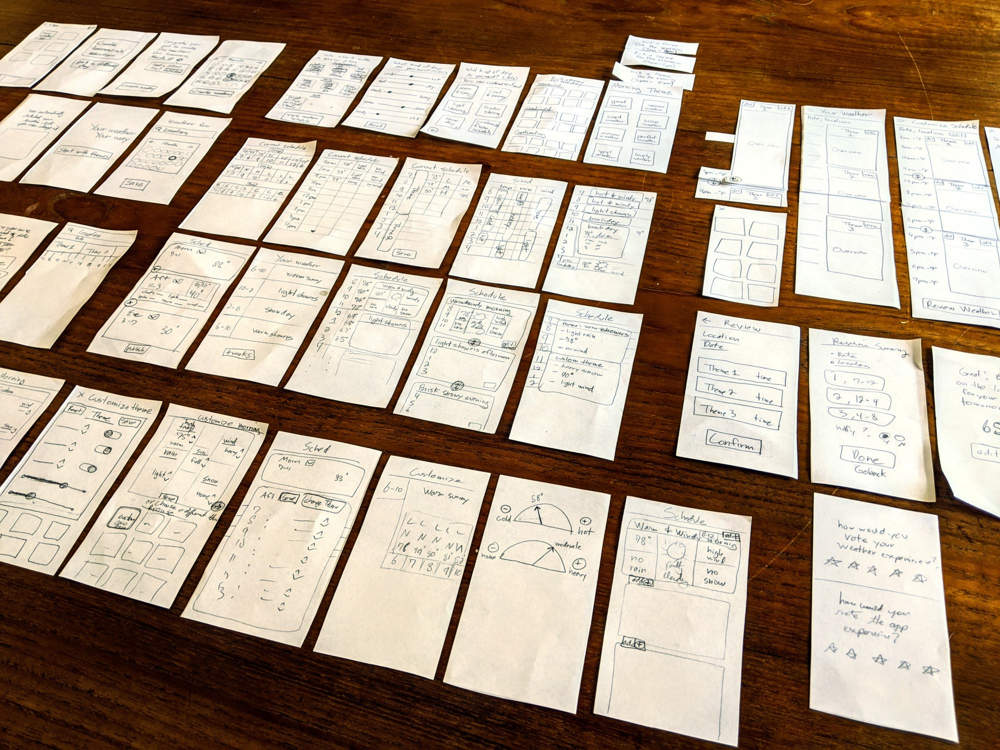 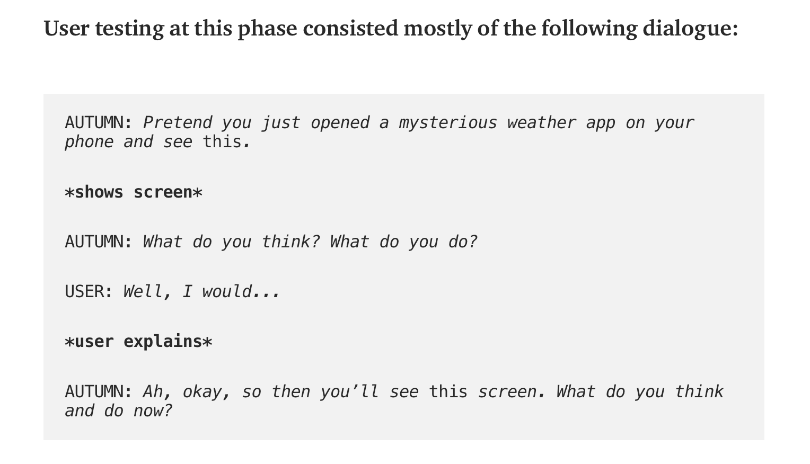Eventually through prototyping, the solution of "themes" emerged. Allowing users to select and edit weather themes would be a simple and effective way to balance guidance and freedom throughout the process.
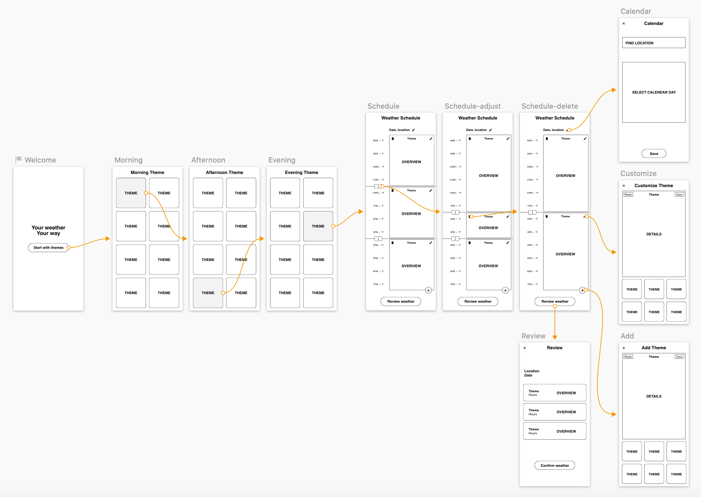Final design
Upon entering the app, a user is prompted to select a theme. They may then customize it if desired, or else review and publish their weather immediately.
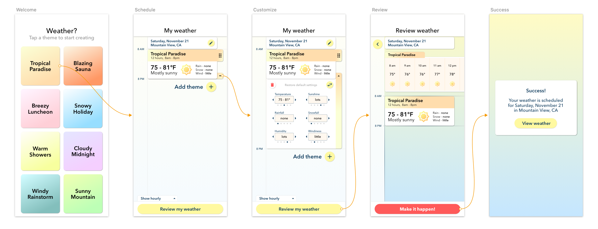Users may add additional themes, switch out or delete themes. Even when deleting themes, all customizations persist unless the user decides to reset the theme.
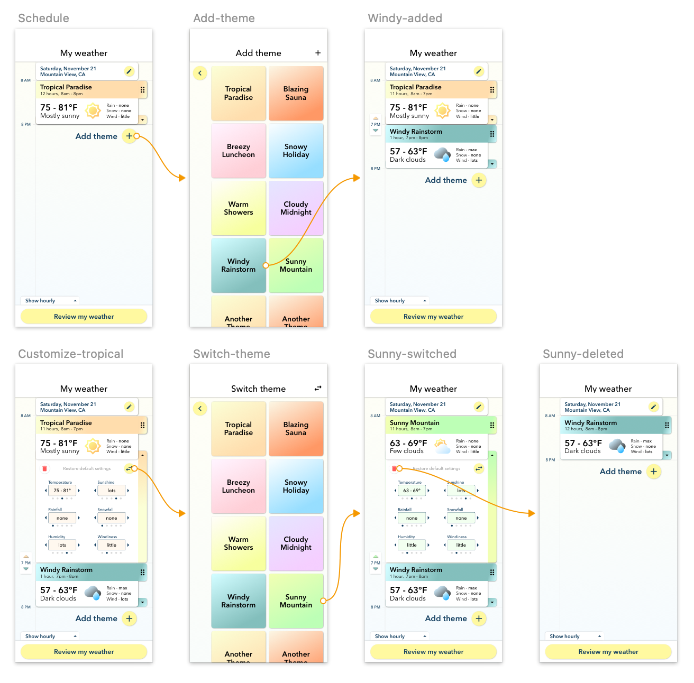Weather is set to happen in the user's current city the following day by default, but this can be customized to a date and location that the user chooses.
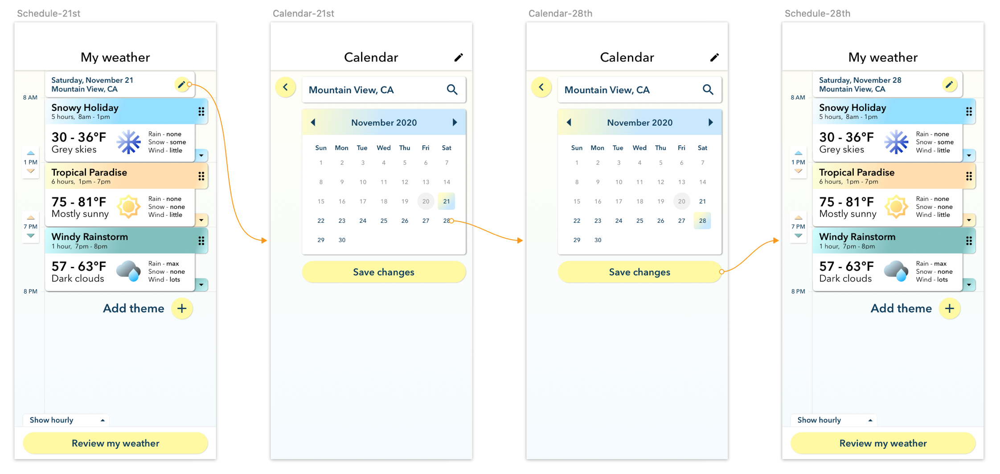Elements of a theme can be customized independently.
Users can drag to reorder themes, and choose when their themes start and end.

Happy weather creating!